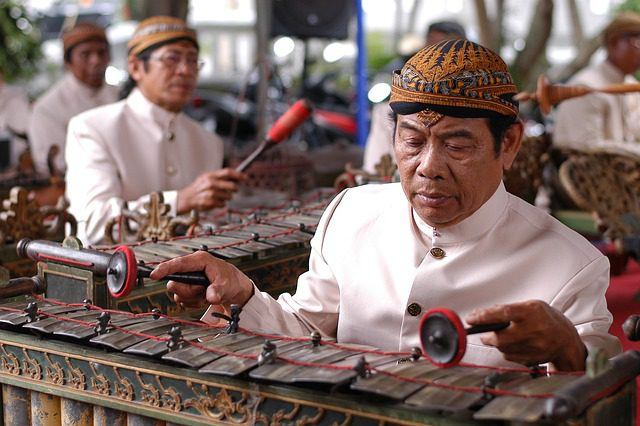
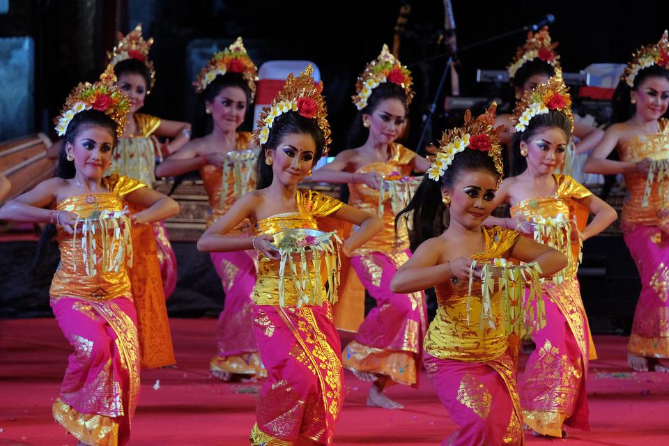
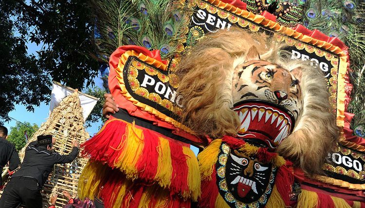
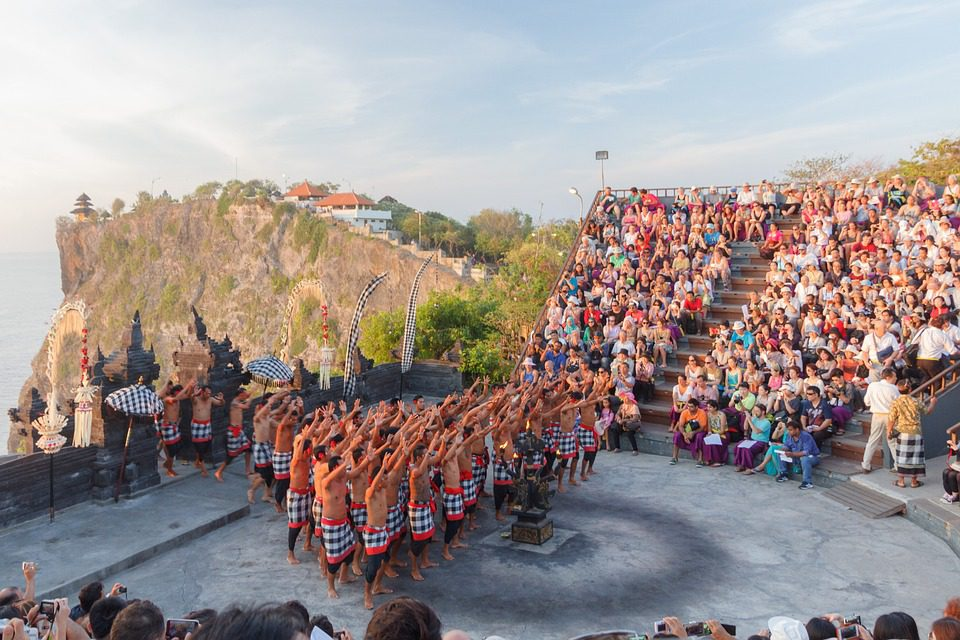
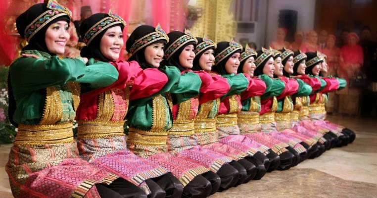
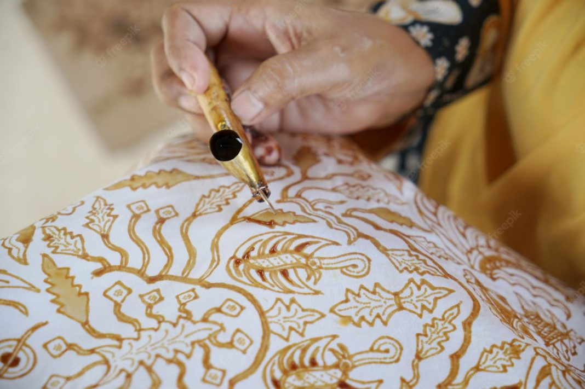
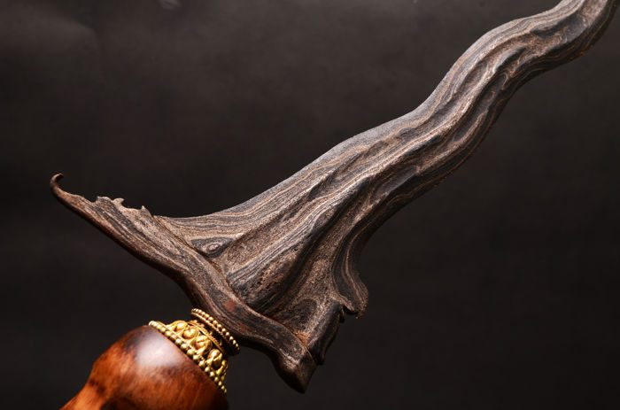
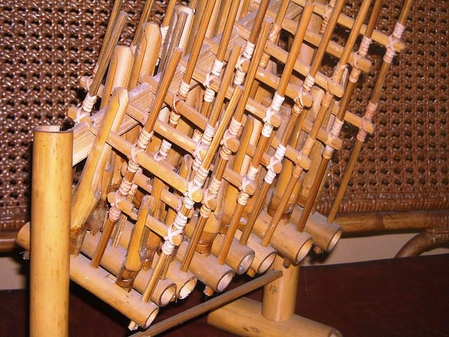

KEBUDAYAAN INDONESIA

GAMELAN
Siapa yang nggak mengenal alat musik yang satu ini? Gamelan merupakan seperangkat alat musik instrumen yang biasanya digunakan untuk iringan budaya lain seperti tarian, nyanyian daerah sampai pewayangan. Gamelan sendiri terdiri dari beberapa alat musik yang ada di dalamnya. Beberapa alat musik yang tergabung di dalamnya adalah gangsa, gender, bonang, gong, saron, slenthem, gambang, seruling, rebab hingga kendang yang suaranya membuat ingin bergoyang. Gamelan ini merupakan budaya yang sangat populer bahkan orang mancanegara pun berminat untuk bisa memainkannya.

TARI PENDET
Budaya kedua yang bisa kamu ketahui adalah Tari Pendet. Pendet berasal dari Bali dan termasuk tipe tari tertua di Pulau Dewata ini, tarian ini sudah ada sejak tahun 1950 lalu. Biasanya tari ini digunakan untuk ucapan selamat datang pada tamu penting bahkan sampai ritual keagamaan. Ciri khas dari tariannya adalah penarinya bakalan membawa mangkok perak yang isinya ada bunga. Tarian ini sangat populer bahkan pernah disajikan pertama kalinya pada ajang ASEAN tepatnya di tahun 1960 lalu.

REOG PONOROGO
Budaya ketiga yang nggak kalah menarik untuk diperhatikan adalah Reog Ponorogo. Meskipun saat ini Reog sudah banyak ditemukan di daerah lain namun asalnya memang ada di Ponorogo, Jawa Timur. Ciri khas dari pertunjukan ini adalah dua tokoh sosok warok dan gemblak yang berada pada gerbangnya. Pertunjukan Reog memang membutuhkan area pentasan luas bahkan biasanya disertai dengan skenario menarik antara penonton dan pemainnya. Reog menjadi salah satu budaya yang kental dengan kemistikan apalagi topeng yang perlu digigitnya memang berat sekitar 50kg.

TARI KECAK
Budaya pertunjukan yang bisa kamu lihat adalah Tari Kecak. Bali memang selalu identik dengan tariannya yang khas dan beramai-ramai salah satunya adalah Tari Kecak. Tarian ini memadukan beberapa unsur menjadi satu yakni mistis, kesenian dan budaya khas Bali. Keunikan yang dimiliki oleh tariannya adalah para penarinya bakalan berteriak “cak,cak,cak” secara bersemangat dan memiliki irama tertentu. Gerakan tarian tangan dari para pemainnya juga seragam sehingga sangat sayang kalau nggak menyempatkan untuk menonton. Pertunjukannya juga disertai dengan teater singkat Rama dan Sinta.

TARI SAMAN
Budaya berikutnya yang perlu tahu adalah Tari Saman. Tarian yang satu ini menjadi kebanggaan khusus bagi warna Aceh. Bahkan saking terkenalnya tarian ini sampai banyak diajarkan dan dilombakan secara taraf Nasional. Tariannya cukup unik dan membutuhkan konsentrasi untuk bisa melakukan gerakan indah. Gerakannya melibatkan banyak anggota tubuh seperti lutut, anggota badan atas sampai gerakan tepuk tangan. Gerakannya harus serentak dengan tempo yang cukup cepat. Sehingga masing-masing penari memang harus hafal dan melakukan gerakan sesuai porsinya.

BATIK
Siapa yang nggak tahu batik? Kain dengan banyak motif dan warna menarik ini memang menjadi ciri khas Indonesia banget. Kamu juga bisa menemukan sejarah panjangnya yang Batik dibuat dengan teknik canting lilin dan pewarnaan yang khas sehingga membuatnya menjadi mahal dan estetik. Meskipun saat ini sudah banyak yang membuatnya secara modern namun batik dengan cara pembuatan tradisional masih tetap banyak dicari karena dirasa lebih bagus dan awet. Setiap daerah memiliki masing-masing ciri khas batik sesuai dengan motif khas dari daerahnya masing-masing.

KERIS
Budaya berikutnya yang perlu kamu tahu adalah senjata keris. Keris sangat kental dikenal terutama pada Indonesia bagian tengah dan barat. Senjata yang satu ini memiliki ciri khas yang bentuknya nggak simetris terutama pada bagian pangkal ujungnya. Keris banyak digunakan untuk senjata melawan musuh dan upacara adat. Dalam budaya Jawa sendiri keris sering dikaitkan dengan kebutuhan mistis dan cerita sejarah di baliknya. Nggak heran kalau keris banyak diselipkan pada pakaian adat jawa maupun pengantin yang ingin menikah menggunakan keris Jawa. Seiring waktu keris digunakan hanya untuk pegangan dan hiasan saja.
